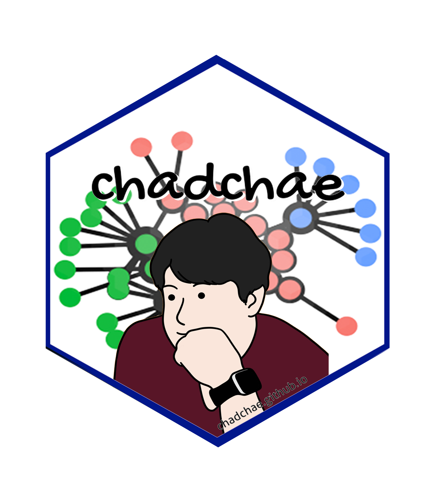

경영교육의 AI와 비판적 사고
공개 실라버스의 교육설계와 판단 책임
연구 개요

Project Details
| 항목 | 값 |
|---|---|
| 제목 | Artificial Intelligence and Critical Thinking in Business Education |
| 오너 | 박병화 |
| 주도 | member |
| 유형 | 연구 |
| 상태 | 초기화 |
| 협업 | collaboration |
| 관련 연구자 | 채충일, 박병화 |
| 시작일 | 2026-03-20 |
| 목표 종료일 | 2026-05-30 |
경영교육의 인공지능–비판적 사고 통합 재검토: 공개 실라버스의 교육설계와 제도적 문서층
연구 목적
AI를 사용하는 수업에서 학생의 비판적 판단은 어떻게 설계될까요? 본 연구는 미국 경영교육의 공개 실라버스를 활용해 AI 교육내용·교수학습 활동·평가·사용 규정의 관계를 분석합니다. 학생이 무엇을 만들고, 어떤 근거로 검토·수정하며, 자신의 판단을 어떻게 설명하도록 요구받는지 살펴봅니다.
프로그램 수준의 선행 매핑을 개별 과목의 원문 근거로 구체화하고, 학교 공통 정책과 과목 고유 설계를 구분합니다. 잠정 중심현상은 AI 산출물에 대한 책임 있는 판단의 배치입니다.
연구 질문
- AI와 비판적 사고의 통합은 어떤 문서적 패턴을 보이는가?
- 기존 프로그램 매핑과 어떤 공통점과 차이가 있는가?
- 교육내용·활동·평가와 AI 사용 규정은 어떻게 배치되는가?
- 선정 재평가와 기준 변경은 분석 입력에 어떤 차이를 만드는가?
현재 단계
보존 실라버스 62문서의 코딩 복원·교차분석·8사례 비교와 별도 14사례 QCA 파일럿 재현을 바탕으로 한글 원고 R2 검토본을 작성했습니다. 새 선정자료 51건·20학교는 후속 내용분석 입력으로 구성했으며, 내용 재분석은 아직 수행하지 않았습니다.
현재는 분석 코퍼스의 확정, 핵심 내용분류의 독립 검증, 정책 문맥과 기관 적격성·중복 처리를 검토하는 단계입니다. 실라버스에서 확인한 의도된 설계를 실제 수업 실행이나 학생의 학습효과로 해석하지 않습니다. 저널 선정·공개 게시·투고는 대기 상태입니다.
읽는 순서
연구목적과 질문 → 이론과 개념적 프레임워크 → 연구방법 → 교차분석 → 사례 비교 순서로 읽을 수 있습니다. 별도 QCA 파일럿, 그림 갤러리, 원고 안내, 문헌검토, 진행현황도 제공합니다.
저자
- 채충일 — Wenzhou-Kean University
- 박병화 — Valdosta State University
- 황태원 — Valdosta State University
저자순은 확정되어 있으며 교신저자와 CRediT 기여 진술은 미확정입니다. 이 사이트는 연구 진행자료이며 확정된 게재논문이 아닙니다.
경영교육의 인공지능–비판적 사고 통합 재검토: 공개 실라버스의 교육설계와 제도적 문서층
최종 내용 갱신: 2026-10-16 01:31 (KST)
현재 내용은 연구팀의 한글 원고 R2 검토본에 기반합니다. 새 분류·축코딩 해석의 독립 검증과 51건 내용 재분석은 진행 전이며, 문서의 설계를 실제 학습효과로 해석하지 않습니다.
AI를 사용하는 수업이 곧 비판적 사고를 가르치는 수업인지는 별도의 질문입니다. 본 연구는 경영교육 실라버스에서 학생이 무엇을 만들고, 어떤 근거로 검토·수정하며, 그 판단을 어떻게 설명하고 평가받도록 설계되어 있는지 살펴봅니다.
기존 ATLAS.ti 코딩과 공개 실라버스 62문서를 복원하고, 활동·평가·AI 역할별 교차분석과 8개 심층사례를 연결했습니다. 잠정 중심현상은 AI 산출물에 대한 책임 있는 판단의 배치입니다. AI 활용의 양을 학생의 판단 요구와 구별하고, 학교 공통 정책과 과목 고유 설계를 나누어 읽습니다.
| 자료와 결과 | 현재 범위 |
|---|---|
| 분석1 | 보존 실라버스 62문서; 60문서 민감도 분석 별도 |
| 복원 코딩 | 152코드·3,954인용문·5,945코딩 할당 |
| 보강 분석 | 근거 930행·8사례·20종 결과표·그림 10종 |
| 새 선정자료 | 3인 공통 포함 53건 중 구학기 2건 제외: 51건·20학교 |
| 별도 탐색 | 14사례 QCA 파일럿; 분석1과 별개 |
| 현재 원고 | 한글 R2; 내부 원고 PDF 49쪽 |
읽는 순서
저자
- 채충일 — Wenzhou-Kean University
- 박병화 — Valdosta State University
- 황태원 — Valdosta State University
저자순은 확정되어 있습니다. 교신저자와 CRediT 기여 진술은 연구팀 확인 후 정합니다. 이 사이트는 연구 진행자료이며 게재논문이나 확정된 최종 결과로 인용하는 문서는 아닙니다.